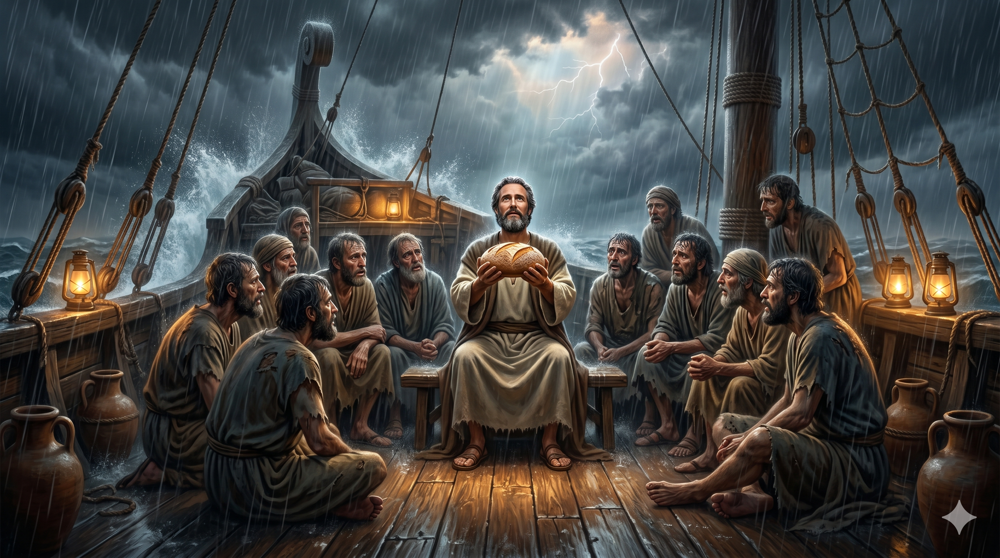

거센 폭풍 속 배 위에 선 바울 — 두려움에 떠는 276명 앞에서 담대히 하나님의 약속을 선포하는 사도
"내가 너희를 권하노니 이제는 안심하라 너희 중 아무도 생명에는 아무 손상이 없겠고 오직 배 뿐이리라 내가 속한 바 곧 내가 섬기는 하나님의 사자가 어제 밤에 내 곁에 서서 말하되 바울아 두려워하지 말라 네가 가이사 앞에 서야 하겠고 또 하나님께서 너와 함께 행선하는 자를 다 네게 주셨다 하였으니" — 사도행전 27:22–24
바울은 로마로 압송되는 죄수 신분으로 배에 올랐습니다. 항해가 시작되고 얼마 지나지 않아 유라굴로라는 광폭한 북동풍이 배를 덮쳤습니다. 선원들은 짐을 바다에 버리고, 배의 기구까지 내던졌습니다. 여러 날 해도 별도 보이지 않는 폭풍 속에서 모두가 살 가망을 버렸습니다. 그때 바울이 나섰습니다. 죄수 신분이었지만, 그는 두려움에 사로잡힌 276명의 한가운데 서서 하나님의 말씀을 선포했습니다. 전날 밤 하나님의 사자가 나타나 "두려워하지 말라, 네가 가이사 앞에 서야 하고 하나님이 너와 함께 행선하는 자들을 다 네게 주셨다"고 말씀하셨기 때문입니다.
바울의 선언은 단순한 위로가 아니었습니다. 그것은 하나님의 약속에 근거한 담대한 믿음의 선포였습니다. "그러므로 여러분이여 안심하라 나는 내게 말씀하신 그대로 되리라고 하나님을 믿노라"(행 27:25). 실제로 배는 멜리데 섬 해안에 좌초되었지만, 276명 모두 살아서 육지에 올랐습니다. 한 사람의 믿음이 276명의 생명을 살린 것입니다. 바울은 로마로 가는 여정에서 죄수였지만, 폭풍 앞에서는 가장 강한 사람이었습니다. 그 강함은 하나님의 약속에 대한 흔들리지 않는 신뢰에서 나왔습니다.

폭풍 속 14일 만에 바울이 떡을 들어 감사기도를 드리는 장면 — 절망 속의 성찬, 믿음의 식탁
이 이야기에서 바울의 위치를 생각해 보십시오. 그는 죄수였습니다. 발언권도, 권위도 없는 사람이었습니다. 그러나 폭풍 앞에서 가장 평정심을 유지하고, 가장 구체적인 희망을 제시한 것은 바울이었습니다. 하나님이 그와 함께하셨기 때문입니다. 우리의 삶에도 때로 유라굴로 같은 폭풍이 찾아옵니다. 건강의 위기, 가정의 폭풍, 재정의 어려움, 관계의 파국. 그 폭풍 속에서 하나님의 말씀을 붙잡고 "그대로 되리라고 믿노라"고 선언할 수 있다면, 그 믿음이 주변 사람들에게까지 생명의 닻이 됩니다.
폭풍이 14일째 되던 날, 바울은 모두에게 음식을 권하며 떡을 들어 하나님께 감사기도를 드렸습니다. 죽음 앞에서도 감사할 수 있는 것, 그것이 믿음의 삶입니다. 당신은 지금 어떤 폭풍 속에 있습니까? 하나님은 어젯밤에도 당신 곁에 서계셨습니다. "두려워하지 말라"는 그분의 말씀이 오늘도 유효합니다. 폭풍은 지나가고, 약속하신 항구에 닿게 되실 것입니다.
폭풍은 당신을 멈추게 할 수 없습니다.
하나님이 목적지를 정하셨기 때문입니다.
"나는 내게 말씀하신 그대로 되리라고 하나님을 믿노라."
이 한 마디 믿음이 276명을 살렸습니다.